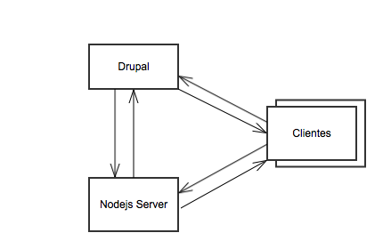
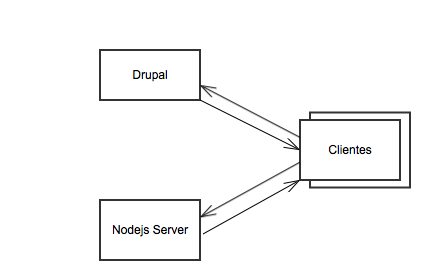

Desenvolvedor Drupal
Exemplo de um servidor Nodejs
var http = require('http');
http.createServer(function(req,res) {
var head = { 'Content-Type': 'text/plain; charset=utf-8' };
res.writeHead(200, head);
res.end('Olá mundo!');
}).listen(3000);
console.log('Servidor iniciado em localhost:3000.');
O Gerenciador de pacotes do nodejs é o NPM.
Grandes empresas como Linkedin, Wallmart, Grupon, Microsoft e Paypal usam NodeJS
É uma tecnologia que permite comunicação bidirecional de baixa latência
// Evento quando o usuário se conecta.
io.on('connection', function(client) {
});
// Servidor enviando mensagem para client.
client.emit("seu-evento", data);
// Envia mensagem para os demais clientes.
client.broadcast.emit("seu-evento", data)
// Evento disparado quando usuário desconecta.
client.on("disconnect", function() {
});
// Evento que o servidor escuta uma ação do cliente.
client.on("um-evento", function(data) {
});
Nodejs Integration : https://www.drupal.org/project/nodejs
Views Nodejs : https://www.drupal.org/project/views_nodejs
Primeira Autenticação
Demais Autenticações
Criando um user channel
/**
* Implements hook_nodejs_user_channels().
*/
function hook_nodejs_user_channels($account) {
if ($account->uid > 0) {
return array('nodejs_user_' . $account->uid);
}
}
Enviando uma mensagem
// Build message object.
$message = new stdClass();
$message->channel = 'meu_channel';
$message->callback = 'meu_callback'
$message->data = (object) array(
'body' => 'Sua mensagem',
);
nodejs_enqueue_message($message);
Callback da mensagem no Javascript.
(function ($) {
/**
* Drupal.Nodejs.callback
*/
Drupal.Nodejs.callbacks.meu_callback = {
callback: function (message) {
if (message.channel == 'meu_channel') {
// Realiza uma ação.
}
}
};
}(jQuery));